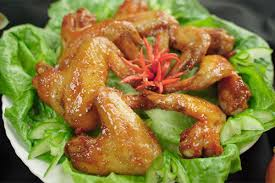

Home
Canh ga chien

Description
This recipe is a Vietnamese dish featuring chicken that is first fried and then simmered in a flavorful broth.
It is often served with rice and is a popular comfort food in Vietnamese cuisine.
Ingredients
- 500g chicken pieces (preferably bone-in)
- 2 tablespoons vegetable oil
- 1 onion, sliced
- 2 cloves garlic, minced
- 1 tablespoon fish sauce
- 1 teaspoon sugar
- 4 cups chicken broth
- Salt and pepper to taste
Steps
- Heat the vegetable oil in a large pot over medium heat. Add the chicken pieces and fry until they are golden brown on all sides. Remove the chicken from the pot and set aside.
- In the same pot, add the sliced onion and minced garlic. Sauté until the onion is translucent and fragrant.
- Add the fish sauce and sugar to the pot, stirring to combine with the onions and garlic.
- Pour in the chicken broth and bring it to a boil. Once boiling, reduce the heat to low and return the fried chicken pieces to the pot.
- Simmer the soup for about 30 minutes, or until the chicken is cooked through and tender. Season with salt and pepper to taste.
- Serve hot with steamed rice or enjoy as a hearty soup on its own.